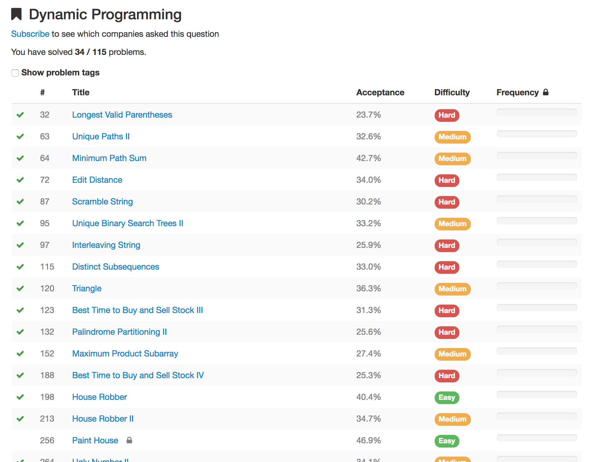
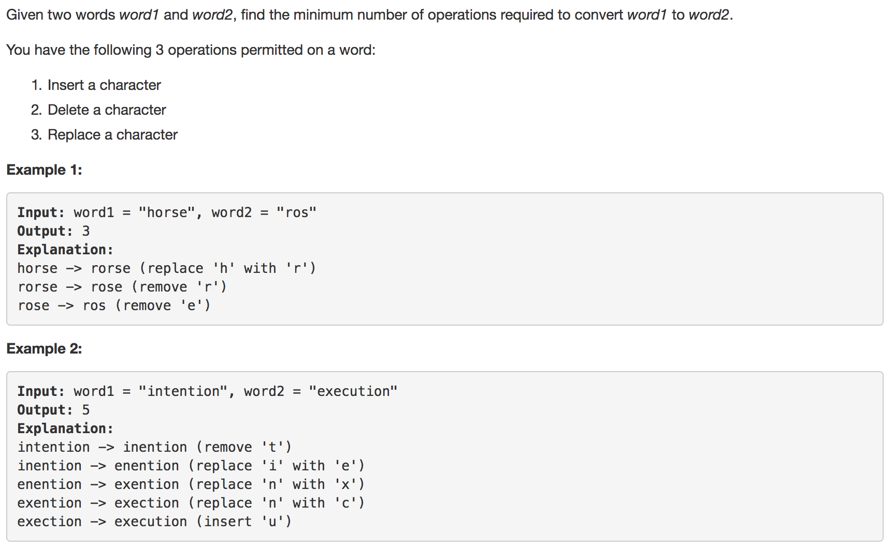
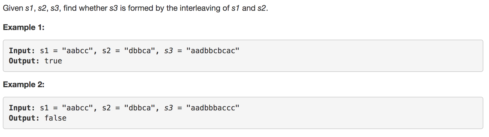

动态规划初探
Intro
动态规划（DP）问题是一道坎。相信很多人都有这种感觉，它是中高难度题的常客，蕴含了程序设计的经典思想。
这种技法或者说思想难以掌握是有原因的。它的核心目标是全局最优，而不是局部最优，这是反直觉的。人脑不是机器，所以我们往往陷入贪心的想法。我第一次遇到背包问题的时候，直接的想法是把物品按 价值/重量 排序，再依次取。这就好比小偷作案，总是先挑价值高又轻便的拿。但是这种经验并不是最优解。
说到背包问题，第一次看到正解后过了很长时间才真正理解。写本文之前，又读了一遍背包九讲(pdf)。确实背包问题是经典的DP问题，也是对我影响最深的DP问题。推荐对DP有一定理解之后再读。
写这篇博客之前，我对DP也是有些畏惧的，做题属于碰运气，有时能A，有时不行，还有些时候我都不清楚是要用DP解题。于是花了2周多的时间，刷了一些leetcode上的DP题目。

目前算是初窥其貌，结合一些看到别人的总结，通俗得讲下我的理解。
初步分析
如果说DP的核心目标是寻找全局最优解，那这个最优解是如何确保的呢？通过划分子问题，DP问题常常是需要多步的决策，如背包要挑选物品。这些子问题往往是迭代的，一个自问题依赖于另一个的解。每个自问题都能到达最优解就获取到全局最优。因此可以说DP问题就是如何划分子问题并找到子问题的解。
从上面的描述里可以明显感觉到一个词，迭代。在我看来，迭代是符合人类思想的解决DP问题最直观的方式。
举个栗子：

来自leetcode72题，难度为hard。这道题我花了很久才做出来……而且回顾的时候又花了很久……
其实题目并不是特别难，但是看起来比较吓人。hard级的题目中DP都不是很直接，需要一定的转换。
根据题意，核心目标是匹配上两个字符串，通过delete、replace、add三种操作。那么子问题也就相对直接了，两个字符串的子串的匹配加上变成子串的步数即为结果。
这里我的想法是有三种策略：
- 将str1的首字母替换为str2的首字母
- 删除str1的首字母，str2不变
- 找到str1中str2首字母出现的第一个位置，删除它及之前的所有字母，删除str2首字母。
当str1和2中有一方为空时，删除另一方全部字母或添加一方全部字母即可，也就是步数加上剩余一方的长度。
代码如下：1
2
3int res = 1 + getRes(i + 1, word1, str, map);
res = Math.min(res, 1 + getRes(i + 1, word1, str.substring(1), map));
res = Math.min(res, index + getRes(i + 1, word1, str.substring(index + 1), map));
其中getRes为对子串递归调用。
但是这种解法直接提交以后出现TLE，超时错误。原因很简单，计算了重复状态。这里就可以引出DP中的常规操作，剪枝或者说记忆化搜索。我的代码中是使用了一个map来保存状态，通常更常用的方法是用一个数组记录。
完整代码如下：1
2
3
4
5
6
7
8
9
10
11
12
13
14
15
16
17
18
19
20
21
22
23
24
25public int minDistance(String word1, String word2) {
Map<String, Integer[]> map = new HashMap<>();
IntStream.range(0, word2.length() + 1).forEach(x -> map.put(word2.substring(x), new Integer[word1.length() + 1]));
return getRes(0, word1, word2, map);
}
public int getRes(int i, String word1, String str, Map<String, Integer[]> map) {
if (map.get(str)[i] != null)
return map.get(str)[i];
if(i >= word1.length())
return str.length();
int res = 1 + getRes(i + 1, word1, str, map);
if(str.length() > 0) {
res = Math.min(res, 1 + getRes(i + 1, word1, str.substring(1), map));
int index = str.indexOf(word1.charAt(i));
if (index != -1) {
res = Math.min(res, index + getRes(i + 1, word1, str.substring(index + 1), map));
}
}
map.get(str)[i] = res;
return res;
}
状态转移
很多时候，动态规划问题的子问题并不好找。通过动态规划做题的经验我们知道有个叫递推方程的东西。而常见递推方程中递推的就是状态，也就是状态转移的过程，寻找状态的转移而去解决子问题是常见的思路。

题目为leetcode97，由题意，需要用s1和s2组装成s3。s3从0到s3.length的长度都可以由s1和s2组成（子问题），s1和s2的组成方式则可以由i和j的二维数组表示。i代表s1的位置（substring(0, i)），j代表s2的位置。状态转移为len = i + j - > len + 1 = i + 1 + j / len + 1 = i + j + 1满足相关位置的字符相同即可转移。代码如下：1
2
3
4
5
6
7
8
9
10
11
12
13
14
15
16
17public boolean isInterleave(String s1, String s2, String s3) {
if(s1.length() + s2.length() != s3.length())
return false;
int[][] dp = new int[s3.length() + 1][s3.length() + 1];
dp[0][0] = 1;
for(int i = 1; i <= s3.length(); i++) {
for(int j = 0; j < i; j++) {
if(s1.length() >= i -j && dp[j][i-j -1] == 1 && s1.charAt(i - j - 1) == s3.charAt(i -1)) {
dp[j][i - j] = 1;
}
if(s2.length() >= i -j && dp[i-j -1][j] == 1 && s2.charAt(i - j - 1) == s3.charAt(i -1)) {
dp[i - j][j] = 1;
}
}
}
return dp[s2.length()][s1.length()] == 1;
}
很多DP的文章都在强调寻找递推式，但是递推式是靠近结果的一步。寻找递推式的过程，是划分子问题或者表示状态并得到状态的转移。
一些理论
知乎上关于理解动态规划也有许多回答，多是关于理论和概念的。能够用动态规划解的题目，状态都具有这两种特性。
最优子结构: 每个阶段的最优状态可以从之前某个阶段的某个或某些状态直接得到
无后效性: 而不管之前这个状态是如何得到的
做到一些dp题的时候，我感觉DP和DFS（广度优先搜索）的过程十分相近。例如一个网格，需要从左上角通过向下向右走到右下角，节点带权值。再理解动态规划之前，这对我来说就是走过所有节点并取走过该节点时最小值的问题。这里有一个解释：
每个阶段只有一个状态->递推
每个阶段的最优状态都是由上一个阶段的最优状态得到的->贪心
每个阶段的最优状态是由之前所有阶段的状态的组合得到的->搜索
每个阶段的最优状态可以从之前某个阶段的某个或某些状态直接得到而不管之前这个状态是如何得到的->动态规划。
——知乎
这一段话是描述这几种常用算法和状态之间的关系的精髓。需要仔细想想，此处就不再赘述。
思考
实践出真知。在做了一定量的题目之后，会有自己的总结与归纳。动态规划的状态描述是个难点，一般都是用数组来保存状态。
- 最常见的是数组的维度代表状态位置，比如一个二维数组中的某个值。
- 数组的维度可以表示状态的维度，所有维度组合为当前状态。
- 用pal[start][end]来存储状态，start和end分别代表位置。
- 用数组的第一维表示迭代的层数，第二维表示位置.
小结
刷了动态规划的题，直观的感受是，我如果知道要用DP解题，80%以上的Medium都可以解出来，但是hard估计也就50%不到。首先如何识别一道题是需要DP解题的问题？这估计只有在以后的实战中判断了。hard级别的动态规划难点也主要在它的不直观或者说需要多绕一个弯，可能根据题意本身解题会一头雾水，但是换个角度就豁然开朗，这需要的就不只是DP的掌握了。